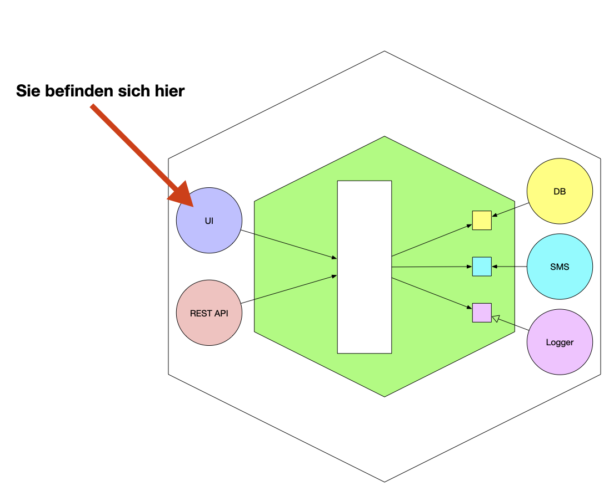

Interfaces in Java commonly look like this:
public interface MyInterface {
void doSomething();
int getValue();
}and we would commonly use (or implement) this interface like this:
public class MyClass implements MyInterface {
@Override
public void doSomething() {
// implementation
}
@Override
public int getValue() {
return 42;
}
}Interfaces play important roles for example in the Java Collections Framework, where they are used to define the behavior of collections like List, Set, and Map. We may define a Functor interface like this:
public interface Functor<F> {
<A, B> F map(F<A> fa, Function<A, B> f);
}(this by the way is closely related to the Functor typeclass in Haskell). By implementing this interfaces, we can modify boxed values in a type-safe way, which not only dramatically increases safety, but is also cool:
// In this example we use the map function on an Optional<T> value to
// transform the value inside the Optional, if it is present.
Optional<Integer> optionalValue = Optional.of(42);
Optional<String> transformedValue = Functor.map(optionalValue,
Object::toString);
// this is in stark contrast to the unsafe way of doing this using possily null
// values:
Integer value = null;
// either we add an if statement to check if the value is null
String transformedValueUnsafe = value != null ? value.toString() : null;
// or we use a try-catch block to catch the NullPointerException (really ugly 🤢)
try {
String transformedValueUnsafe = value.toString();
} catch (NullPointerException e) {
// handle the exception
}Interfaces as List of Propositions
Looking closely at the definition of an interface, we can see that it is a basivally a list of methods/attributes which must be explicitly implemented. Using functional programming, we know that both methods and attributes can be represented as functions (possibly with some additional state and possibly without any arguments). We may embed Javas (or any other) type system into a sufficiently powerful type system, like the calculus of constructions. By doing so, we can regard even stateful/impure functions as pure functions, or rather: as morphisms in a category.
Lets get back to the interface example above. Here we don’t provide any function bodies, but only the signatures of the functions. This just means, we require for an implementation \(X\) for there to be a morphism \(f : T\), where \(T\) is the type of the method/attribute. The requirement that \(X\) must have an attribute of name \(n_f\) therefor corresponds to the proposition: \(n_f(X) = T\).
Using the example from above, we would have \(n_\mathsf{doSomething} : \mathsf{IO} \mathsf{Unit}\) and \(n_\mathsf{getValue} : \mathsf{IO} \mathsf{Int}\).12
Impementations as proofs
Using the Howard-Curry correspondence, we can see that an implementation of a proposition (a proof) corresponds to some “computer program”. More formally, each type corresponds to a proposition (also called formula) and each term corresponds to a proof. We implicitly used this above already, be stating \(n_f(X) = T\) would be a proposition, which clearly is actually just a type. By the afore mentioned correspondence however, we may regard them as the same. Now, finding a proof for the validity of \(n_f(X)\) is therefor the same as constructing a term \(t\) of type \(n_f(X)\). This \(t\) would therefor constitute our function body.
Example
Let us now implement the interface MyInterface from above:
public class MyClass implements MyInterface {
@Override
public void doSomething() {
// implementation
System.out.println("Doing something!");
}
@Override
public int getValue() {
return 42;
}
}Clearly (){System.out.println("Doing something!");} is of type IO Unit (after some sufficient embedding of Javas type system). The same holds true for (){return 42;}, which is of type IO Int.
Further outlook
Due to Javas (and most other OOP languages) type systems limitations, or the limits of computation, the following interfaces sadly are not entirely realizable (ableit one could find some nifty ways around the respective restrictions of the type system). These interfaces are nontheless of utmost importance:
// interface corresponding to the category of groups
interface Group<T> {
T e(); // identity element
T inverse(T x); // inverse element
T multiply(T x, T y); // multiplication
// here we would like for the group axioms to be written as propositions,
// which we can't do in Java.
// Therefor we reduce this step to pseudo code:
// associative: \forall x,y,z : T multiply (multiply x y) = multiply x (multiply y z)
// identity: \forall x : T multiply e x = x
// inverse: \forall x : T multiply (inverse x) x = e
}We may write this interface as the following list of propositions though:
\[ \begin{align*} n_\mathsf{e}(X) &= T \\ n_\mathsf{inverse}(X) &= T \to T \\ n_\mathsf{multiply}(X) &= T \to T \to T \\ n_\mathsf{associative}(X) &= \forall x,y,z : T, n_\mathsf{multiply} (n_\mathsf{multiply} x y) z = n_\mathsf{multiply} x (n_\mathsf{multiply} y z) \\ n_\mathsf{identity}(X) &= \forall x : T, n_\mathsf{multiply} (n_\mathsf{e} x) x = x \end{align*} \]
Exercise: Find another interface which cannot be expressed in Java, but can be expressed in the calculus of constructions.
Ideas possibly worth exploring?
In our programming classes we were told to use interfaces in the onion architecture:
3
The right arrows in this diagram represent interfaces from the business logic of our proramm to the outer layers, like the database or the user interface.
Here an interface might look like this:
public interface UserRepository {
void save(User user);
User findById(String id);
}By implementing this repository for say UserRepoPostgresDB, we prove that UserRepoPostgresDB is in fact a UserRepository, which is just a list of propositions as noted above.
Reducing an interface to a single proposition
We naturally have a monoid structure on \(\mathsf{Prop}\), the set of all propositions. Here \(\textsf{Unit}\) is the neutral element corresponding to the logical constant true, and the binary operation is the logical conjunction, or on the programming side, the product type. We may lift our list of types \((n_f)_{f\in F}\) over to a list of formulas (propositions) \((P_f)_{f\in F}\), then we can reduce our list of propositions to a single proposition \(P=\bigwedge_{f \in F} P_f\) and finally we can bring this proposition back to a single type \(T = \prod_{f\in
F} n_f(X)\).
Footnotes
https://lean-lang.org/functional_programming_in_lean/hello-world/running-a-program.html#:~:text=IO%20Unit↩︎
We just wrap all of Javas function in
IO, because all of Javas functions are potentially impure↩︎Credit goes to http://propra.de/ws2223/. The Programmierpraktikum course at HHU from 2023↩︎